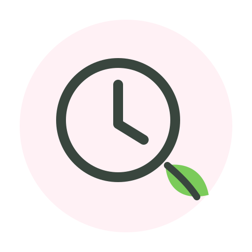
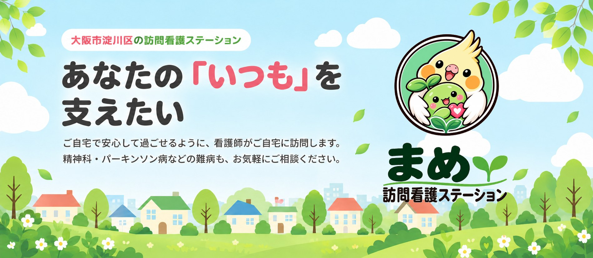
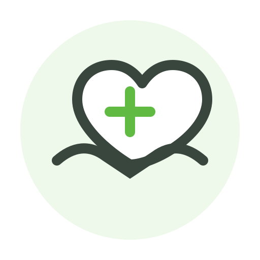
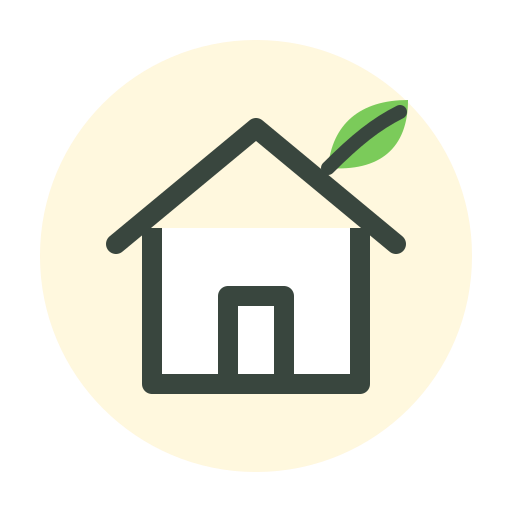
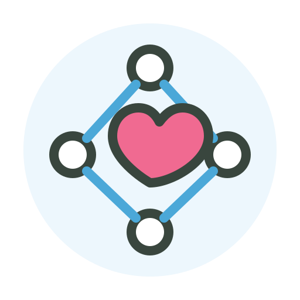

24時間対応・365日定休日なし
急な体調の変化や不安なときも、24時間ご相談いただけます。土日祝も休まず対応しますので、いつでも安心して在宅療養を続けていただけます。

精神科・パーキンソン病などの難病もご相談ください
まめ訪問看護ステーションは、大阪市淀川区を中心に、看護師がご自宅へ伺い療養生活をサポートする訪問看護ステーションです。
「みんなの毎日に、ちょっとした癒しを」。病気や障がいがあっても、住み慣れたご自宅で その人らしい暮らし を続けられるように。在宅での安心を、まごころでお届けします。

急な体調の変化や不安なときも、24時間ご相談いただけます。土日祝も休まず対応しますので、いつでも安心して在宅療養を続けていただけます。

精神科の訪問看護や、パーキンソン病などの難病で療養中の方への看護にも対応しています。服薬管理や精神面の支援、点滴・カテーテルなどの処置が必要な方もご相談ください。

役所のケースワーカー等と連携し、高齢者の住まい探しやお引越しに関するご相談も承ります。居住サポート住宅のご紹介も可能です。2026年12月にはグループホームの開設を予定しています。

訪問鍼灸師・柔道整復師等とも連携しています。主治医やケアマネジャー、関係機関と情報を共有し、チームでご利用者様の生活を支えます。※保険適用には医師の同意や対象条件等があります。
メイン訪問エリア大阪市淀川区
強化エリア西淀川区・東淀川区
上記以外の地域についても、まずはお気軽にご相談ください。
役所のケースワーカー等と連携し、高齢者の住まい探し・お引越しに関するご相談も承ります。
訪問鍼灸師・柔道整復師等とも連携しています。保険適用には医師の同意や対象条件等がありますので、まずはご相談ください。
202612月
2026年12月、グループホームの開設を予定しています。訪問看護で培った「まごころのケア」を、暮らしの場でもお届けします。詳細は決まり次第お知らせいたします。ご入居のご相談は、お電話・LINEにてお気軽にどうぞ。
開設について相談する「今の住まいで暮らし続けるのが難しい」「退院後の住まいを探している」という方へ。役所のケースワーカー等と連携しながら、居住サポート住宅のご紹介や、お引越しに関するご相談を承ります。
住まいについて相談する| 事業所名 | まめ訪問看護ステーション |
|---|---|
| 所在地 | 〒532-0002 大阪市淀川区東三国5丁目7番23号-103 |
| TEL | 06-6676-7005 |
| FAX | 06-6676-7006 |
| メール | omamecp@gmail.com |
| 事業所番号 | 2769191004 |
| 対応時間 | 24時間対応／365日（土日祝も対応） |
| 訪問エリア | 大阪市淀川区（メイン）／西淀川区・東淀川区（強化エリア） |
| お問い合わせ | LINE |
まめ訪問看護ステーションへ直接お電話・LINE・メールでお問い合わせください。ご本人様はもちろん、ご家族様やケアマネジャー・医療機関からのご相談も承ります。
訪問看護の導入には主治医の「訪問看護指示書」が必要になります。主治医へのご相談や関係機関との連絡調整は、私たちもお手伝いします。
ご自宅や入院先の病院などで看護師と面談をしていただきます。訪問看護のご説明とご質問への回答、目標やご利用回数、ご希望の日時を一緒に決めていきます。
訪問看護サービスの利用開始となります。体調を確認しながら主治医・関係機関と連携し、24時間365日体制でご利用者様の生活をサポートします。
看護師がご自宅に伺い、主治医の指示書に基づいて、健康状態の観察・バイタルチェック、服薬管理・医療処置、日常生活やリハビリのサポート、ご家族への療養相談、ターミナルケアなどを行います。
はい。精神科の訪問看護や、パーキンソン病などの難病で療養中の方への訪問看護にも対応しています。服薬管理や精神面の支援、点滴・カテーテルなどの処置が必要な方も、まずはご相談ください。
訪問看護は医療保険・介護保険の適用となり、保険の種類や公費負担制度のご利用状況、訪問回数などによって料金が異なります。実際の料金については、お気軽に一度お問い合わせください。
はい。24時間対応・365日定休日なしで、土日祝も対応しています。急な体調の変化など、不安なことがあればいつでもご相談ください。
もちろんです。ご家族様からのご相談も承っております。お話を伺う中で必要な支援が見つかることもありますので、気になることがあれば一度ご相談ください。
はい。役所のケースワーカー等と連携し、高齢者の住まい探し・お引越しに関するご相談も承ります。居住サポート住宅のご紹介も可能です。また、2026年12月にはグループホームの開設を予定しています。
ご相談やご見学など、どんなことでもお気軽にお問い合わせください。
24時間対応・365日定休日なし